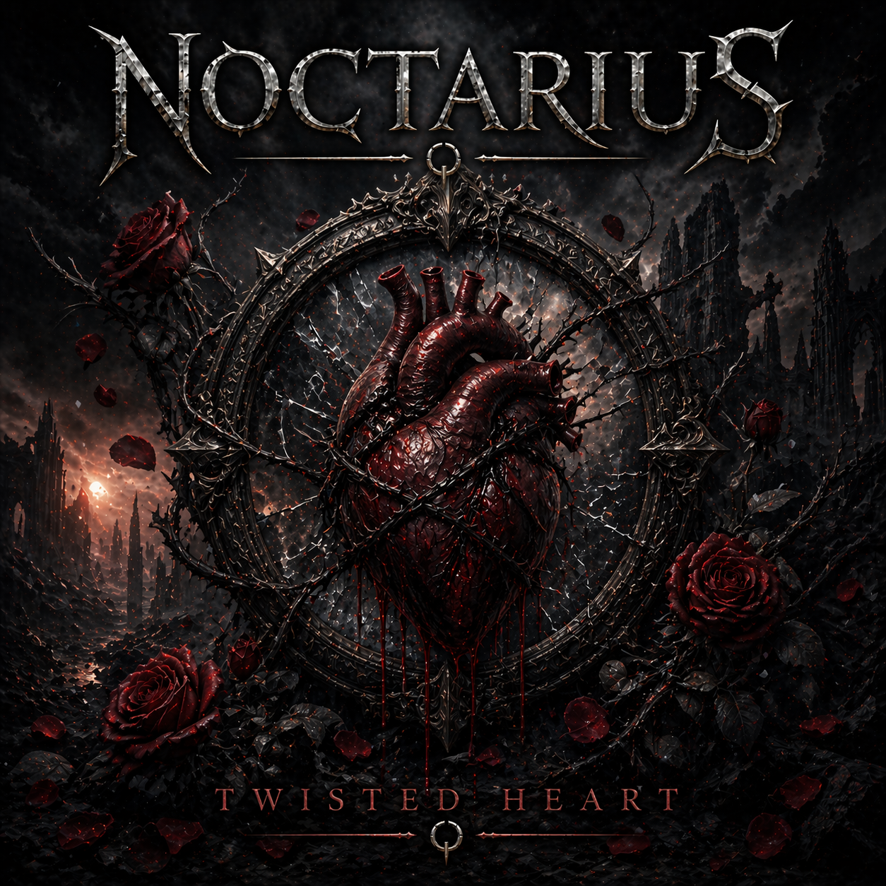

NOCTARIUS
Twisted Heart

A Symphony of Ashes
Walking through the alleys of a burned-out town
Every step is heavy but I won’t fall down
Shadows try to follow everywhere I go
But I keep on moving ’cause I’ve learned to grow
Yeah, the nights get cold
But I won’t lose control
I’m done with playing parts
You can’t break my twisted heart
You can scream, you can tear at my soul
But I’m not fading, no, I’m not letting go
Every scar just shows where the fire used to start
You can’t poison what’s left of my twisted heart
All the words you threw at me were sharp as steel
But I stitched myself together just to start to heal
I’m not running anymore from the things I’ve felt
I’ll rebuild the pieces of the hand I was dealt
Yeah, the nights get cold
But I won’t lose control
I’m done with falling apart
You can’t break my twisted heart
You can scream, you can tear at my soul
But I’m not fading, no, I’m not letting go
Every scar just shows where the fire used to start
You can’t poison what’s left of my twisted heart
I won’t drown in your rain
No more carrying your pain
I’m walking out of the dark
With a brand-new spark
You can scream, you can tear at my soul
But I’m not fading, no, I’m not letting go
Every scar just shows where the fire used to start
You can’t poison what’s left of my twisted heart